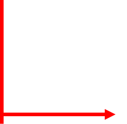
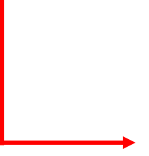
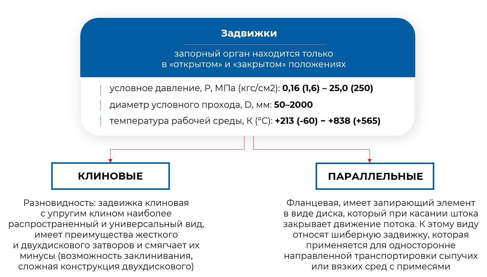

1. Назначение запорной арматуры
|
Назначение
|
|
|---|---|
|  | полное перекрытие потока жидкостей и газов |
| байпасирование (переключение) потока из одного трубопровода в другой | |
|  | дросселирование потока жидкости/газа (изменение расхода, давления и скорости), способ не рекомендуется из-за быстрого износа ЗА |
2. Требования к запорной арматуре
- минимальное гидравлическое сопротивление полностью открытой арматуры
- легкость срабатывания после длительной эксплуатации в открытом положении
- высокая надежность, долговечность, безотказность
- герметичность затвора и всех уплотнений
- коррозионная стойкость, взрывобезопасность
3. Задвижки
